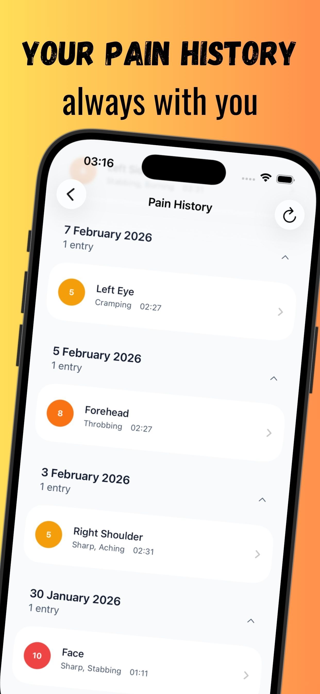
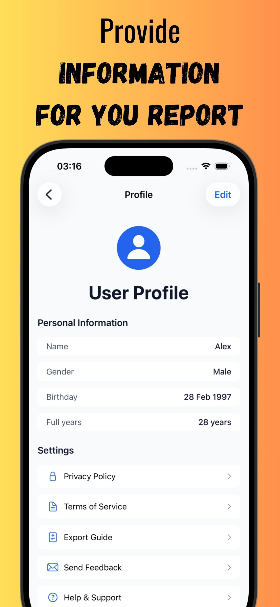
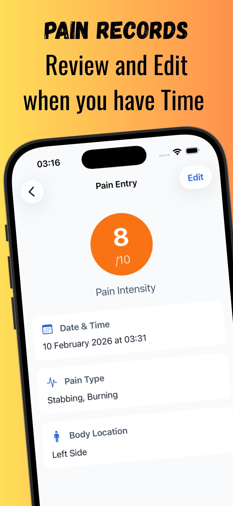
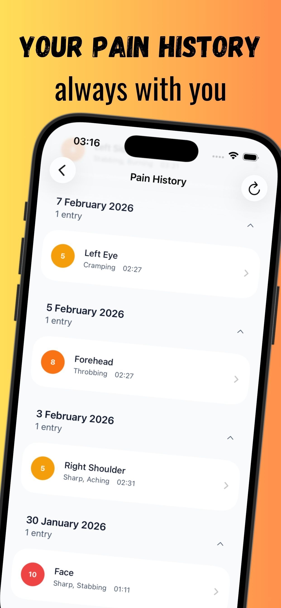
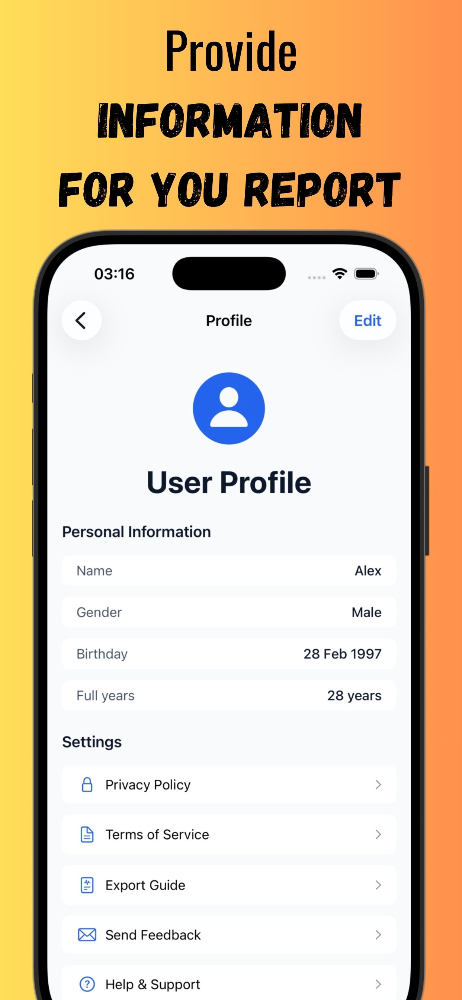
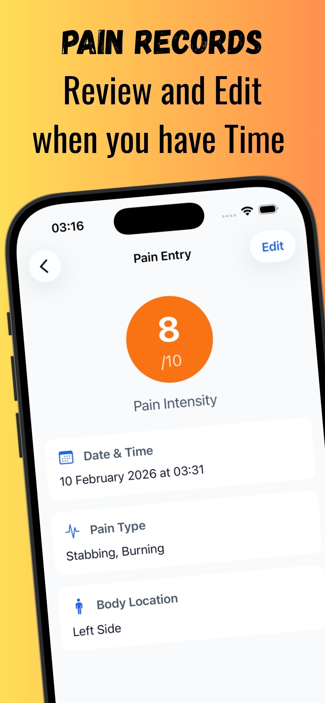

PainPoint: Pain Tracker
Comprehensive Pain Management & Medical Reporting
App Screenshots


 





Project Overview
iOS Pain Tracker is a comprehensive medical-grade iOS application designed to bridge the gap between patient pain experiences and healthcare documentation. Built from the ground up with SwiftUI and SwiftData, this app transforms subjective pain reporting into objective, shareable medical data that enhances treatment outcomes and patient-provider communication.
The application addresses a critical healthcare challenge: the difficulty patients face in accurately communicating their pain experiences to medical professionals. By providing structured data collection, visualization, and professional reporting capabilities, the app serves as a digital bridge between appointments, enabling more informed medical decisions.
Core Features & Capabilities
Advanced Pain Tracking System
- Precision Body Mapping: Interactive selection from 60+ anatomical locations including specific areas like "Left Knee," "Lower Back," and "Upper Abdomen"
- Medical Pain Classification: 14 clinically-recognized pain types (Sharp, Dull, Burning, Throbbing, Pressure, Aching, Stabbing, Cramping, Tingling, Shooting, Stiff, Tender, Radiating, Electric)
- Intensity Visualization: Dynamic 1-10 pain scale with medical color coding that adapts based on severity levels
- Temporal Tracking: Precise timestamp recording with manual adjustment capabilities for accurate episode documentation
Data Visualization & Analytics
- Real-time Dashboard: Live statistics showing today's entries, 7-day trends, and pattern recognition
- Historical Timeline: Chronologically organized pain history with expandable date sections for easy navigation
- Statistical Insights: Automated analysis of pain patterns, frequency trends, and intensity fluctuations
- Visual Indicators: Color-coded intensity mapping using medical-grade color psychology (blues for trust, graduated warning colors for severity)
Professional Medical Reporting
- PDF Export Engine: Custom-built PDF generation system creating medical-grade reports
- Flexible Date Ranges: Export capabilities for last 7 days, 30 days, or custom date ranges
- Healthcare Integration: Reports formatted specifically for medical appointments, specialist referrals, and insurance documentation
- Comprehensive Summaries: Include pain pattern analysis, intensity trends, location frequency, and detailed entry logs
User Experience Design
- Medical Color Psychology: Professional blue-based color scheme that builds trust and reduces anxiety for users experiencing pain
- Accessibility-First: High contrast ratios, readable typography, and intuitive navigation designed for users with varying technical abilities
- Privacy-Focused: Local data storage only—no cloud uploads, no external data sharing, complete user privacy protection
Technical Architecture & Implementation
Technology Stack
- Platform: iOS 17.6+ (iPhone & iPad compatible)
- Programming Language: Swift 6.0 with modern concurrency features
- UI Framework: SwiftUI for declarative, reactive user interface development
- Data Persistence: SwiftData (Apple's modern Core Data replacement) with advanced schema versioning
- Architecture Pattern: MVVM (Model-View-ViewModel) with Repository Pattern for clean separation of concerns
- Dependency Management: Custom dependency injection container with environment-based propagation
Advanced Data Management
// Schema Versioning Architecture
enum PainEntrySchemaV1: VersionedSchema {
static var versionIdentifier = Schema.Version(1, 0, 0)
static var models: [any PersistentModel.Type] { [PainEntryV1.self] }
}
// Repository Pattern Implementation
@MainActor
protocol PainEntryRepositoryProtocol {
func fetchAll() async throws -> [PainEntry]
func insert(_ entry: PainEntry) async throws
func fetchInDateRange(from: Date, to: Date) async throws -> [PainEntry]
}Reactive Data Flow
- Combine Framework: Publisher-subscriber pattern for real-time UI updates
- NotificationCenter Integration: System-wide data change notifications ensuring cross-view consistency
- Async/Await Architecture: Modern Swift concurrency for smooth, non-blocking user experiences
- SwiftData Observers: Automatic UI synchronization when underlying data changes
Performance Optimizations
- Lazy Loading: View models initialized on-demand to prevent startup delays
- Background Processing: Heavy operations (PDF generation, data exports) performed off main thread
- Memory Management: Efficient data fetching with descriptors and predicates to minimize memory footprint
- Splash Screen Architecture: Non-blocking app initialization with background container setup
Software Engineering Excellence
Clean Architecture Implementation
// Dependency Injection Container
@MainActor
final class DependencyContainer {
let painEntryRepository: PainEntryRepositoryProtocol
lazy var homeViewModel: HomeViewModel =
HomeViewModel(repository: painEntryRepository)
lazy var exportViewModel: ExportViewModel =
ExportViewModel(repository: painEntryRepository)
}Data Migration Strategy
- Schema Versioning: Future-proof data structure with VersionedSchema protocol implementation
- Migration Plans: Structured approach for handling schema evolution without data loss
- Backward Compatibility: Type aliases maintaining API consistency across versions
Testing & Quality Assurance
- Repository Pattern Testing: Mockable interfaces for comprehensive unit testing
- Error Handling: Comprehensive error management with user-friendly messaging
- Data Validation: Input validation ensuring data integrity throughout the application lifecycle
User Experience Research & Design
Medical Color Psychology
The application employs evidence-based color psychology specifically tailored for medical applications:
- Primary Medical Blue (#2563eb): Builds trust and professionalism, universally associated with healthcare
- Pain Intensity Scale: Color-graduated system from emerald (low pain) through amber (moderate) to red (severe)
- Calming Aesthetics: Designed to reduce stress and anxiety for users experiencing pain
Accessibility Considerations
- High Contrast Ratios: Ensuring readability for users with visual impairments
- Large Touch Targets: Pain-friendly interface design considering motor skill limitations
- Clear Typography: Medical-grade legibility for users experiencing pain-related cognitive effects
Healthcare Integration Features
Professional Reporting System
The PDF export system generates medical-grade documentation including:
- Patient Demographics: Configurable personal information for medical context
- Pain Pattern Analysis: Statistical summaries of pain frequency, intensity, and location trends
- Temporal Documentation: Precise timestamps for correlation with treatments, medications, and external factors
- Comprehensive Entry Logs: Detailed individual pain episodes with complete context
Clinical Workflow Integration
- Appointment Preparation: Pre-visit report generation for more productive healthcare consultations
- Specialist Referrals: Comprehensive pain history documentation for referral processes
- Treatment Monitoring: Baseline establishment and progress tracking for treatment effectiveness assessment
- Insurance Documentation: Professional-format reports suitable for insurance claim support
Privacy & Security Architecture
Privacy-First Design Philosophy
- Local Data Storage: All personal health information remains on user's device
- No External Dependencies: Zero third-party analytics, tracking, or data transmission services
- User Control: Complete ownership of personal health data with export/delete capabilities
- Compliance Ready: Architecture designed to support HIPAA-adjacent privacy requirements
Data Security Measures
- SwiftData Encryption: Leveraging iOS's built-in data protection mechanisms
- No Network Transmission: Eliminates attack vectors associated with data transmission
- Sandbox Protection: iOS application sandbox provides additional security layers
Development Process & Methodology
Modern Swift Development
- Swift 6.0 Features: Utilizing latest language improvements for performance and safety
- Strict Concurrency: Modern async/await patterns preventing race conditions
- Memory Safety: ARC optimization and proper resource management
- Error Handling: Comprehensive error propagation and user feedback systems
Version Control & Documentation
- GitHub Repository: Complete version control with detailed commit history and branching strategy
- Comprehensive Documentation: README files, technical guides, and implementation summaries
- Code Comments: Inline documentation for maintainability and knowledge transfer
Future Roadmap & Extensibility
Planned Enhancements
- Apple Health Integration: Seamless integration with HealthKit for comprehensive health tracking
- Apple Watch Companion: Quick pain logging and notifications on wearable devices
- iCloud Synchronization: Optional cloud backup while maintaining privacy controls
- Advanced Analytics: Machine learning integration for pain pattern prediction and insights
Technical Evolution
- Modular Architecture: Designed for feature expansion without architectural refactoring
- API Abstraction: Repository patterns enabling future backend integration if desired
- Internationalization Ready: Architecture supporting multiple languages and medical systems
Project Impact & Innovation
iOS Pain Tracker represents a significant advancement in personal health technology, addressing the critical gap between patient experiences and medical documentation. By combining modern iOS development techniques with evidence-based medical color psychology and user experience design, the application demonstrates how technology can enhance healthcare outcomes.
The project showcases advanced iOS development skills including SwiftData schema versioning, reactive programming patterns, dependency injection, and professional-grade PDF generation—all while maintaining the highest standards of user privacy and data security.
Technical Achievements:
- Zero-dependency native iOS application with advanced data persistence
- Medical-grade user interface design with accessibility considerations
- Comprehensive error handling and data validation systems
- Future-proof architecture with schema migration capabilities
- Professional healthcare integration through standardized reporting
This application serves as both a practical healthcare tool and a demonstration of modern iOS development excellence, combining technical sophistication with real-world medical utility.
Built with Swift 6.0, SwiftUI, SwiftData | Available on the App Store